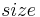
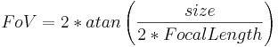
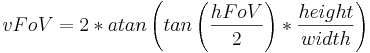
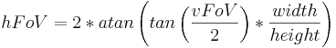

Field of View
The angle of view of a photograph or camera is a measure of the proportion of a scene included in the image. Simply said: How many degrees of view are included in an image. A typical fixed lens camera might have an angle of view of 50°, a fisheye lens can have an angle of view greater than 180° and a full equirectangular or cylindrical panorama would have an angle of view of 360°.
Most people speak of field of view when in fact they mean angle of view. Field of view is the distance covered by a projection at a certain distance. So if an image exactly shows a 2 meter wide object at 1 meter distance, then the field of view is 2 meter (and the angle of view is 90°). Angle of view is also known as angle of coverage.
![[*]](http://wiki.panotools.org/File:Field-of-view.svg){kind=link}
From here on and on the rest of the wiki we will only speak of field of view (although we should speak of angle of view).
Field of view is often abbreviated as FoV. Usually field of view refers to the horizontal field of view (hFoV) of an image. Some applications make use of the vertical field of view (vFoV) which can be calculated from the Aspect Ratio of the image:
For rectilinear images:

For fisheye images (approximation):

Conversion from focal length
The other standard measure of the width or narrowness of a lens is Focal Length.
Assuming a rectilinear lens, the field of view can be calculated like this ( being either width or height for the respective FoV):

Please note that this is an approximation. The exact values depend on the location of the entrance pupil. More information on that in Rik Littlefield's paper. See Fisheye Projection for formulas for Fisheyes[*].
Conversion from horizontal to vertical and vice versa
For fisheye (approximation) and equirectangular images:


For rectilinear images:

